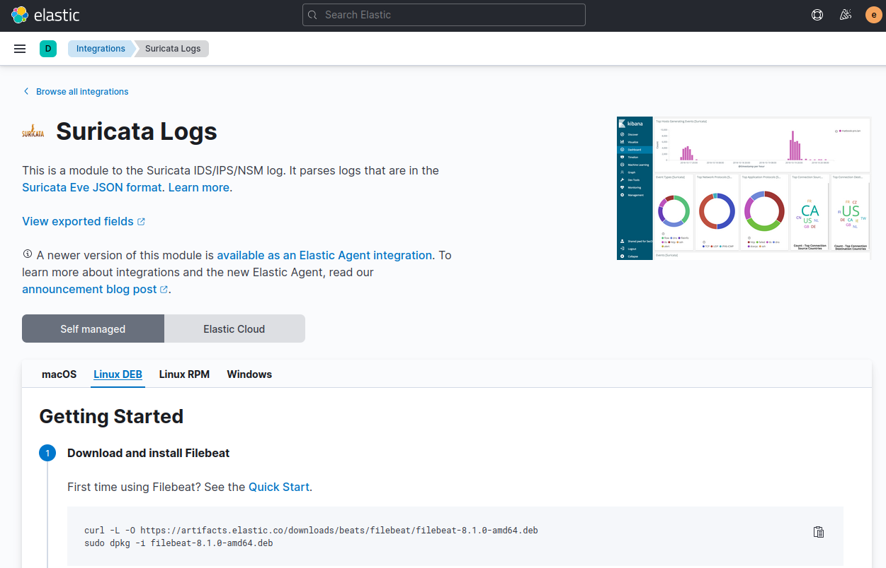
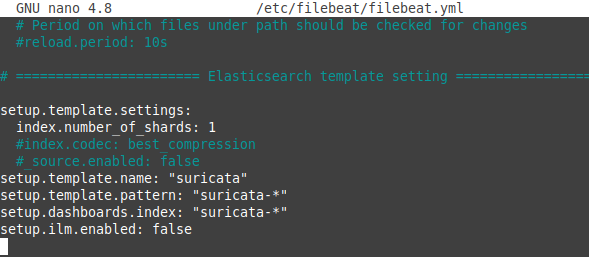
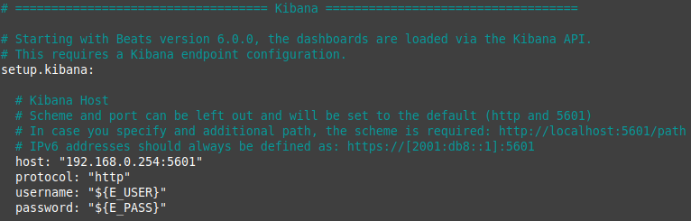
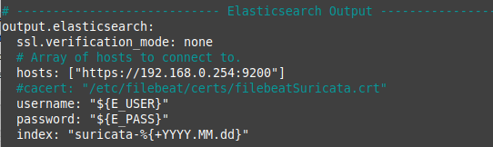
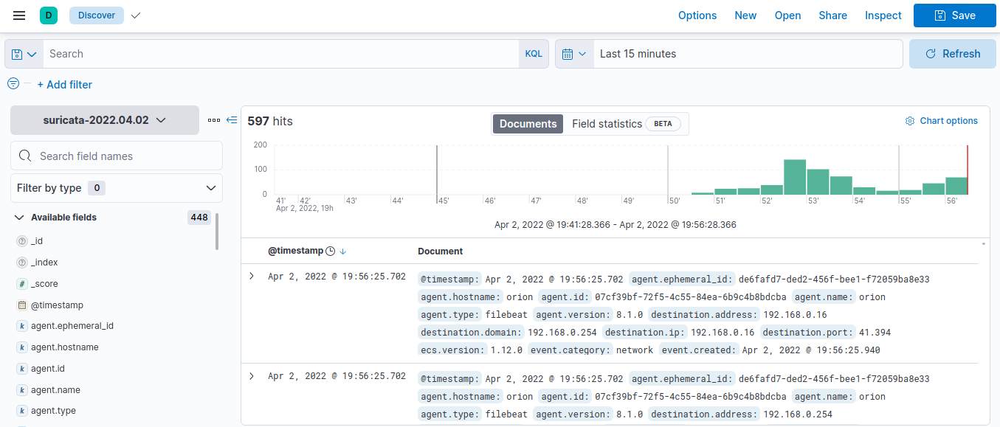

3.1.6.5 Suricata en Kibana
1. Introducción
Si se quiere ver la información de Suricata en Kibana, se tienen varias opciones:
- Mediante el envío directo a Elasticsearch.
- Mediante el envío a Logstash.
En este apartado, se utilizará la primera opción.
2. Recursos
- Equipo Ubuntu Server 20.04.4 con Elastic Stack en producción.
- Equipo Ubuntu Server 20.04.4: Donde se instalará Suricata instalado.
3. Envío a Elasticsearch
Una vez se tiene Suricata funcionando, el siguiente paso es tratar sus datos y visualizarlos de una manera más amigable, para ello nos apoyaremos en Kibana como visualizador a partir de los datos de Suricata que se irán almacenando en Elasticsearch.
En primer lugar, en el equipo que corre Suricata hay que instalar Filebeat para recolectar el fichero de log y enviárselo a Elasticsearch directamente, tras ello se habilitará el módulo de suricata y se configurará. Una vez se tenga listo, Elasticsearch comenzará a almacenar estos registros, y con Kibana poder explotarlos.
Si se accede a Kibana, en el menú izquierdo hay que ir al icono de “Integrations” > “Suricata logs” y nos ofrece todo el detalle de qué se necesita. Es esta URL: http://192.168.0.254:5601/app/kibana#/home/tutorial/suricataLogs.

Figura 1. Información de SuricataLogs en Elastic Stack.
Hay que posicionarse sobre la pestaña “DEB” (para este caso, ya que Suricata corre bajo Uubntu Server) y como se puede ver, viene perfectamente explicado.
Instalación de Filebeats
Si se observa la figura 1, para instalar filebeat, una de las formas es descargando el paquete. Para este caso, se descarga la versión 8.1.0 por compatibilidad con el equipo Elastic Stack que se instaló en el capítulo 3.1.
Los comandos para la descarga e instalación son los siguientes:
root@suricata:/#curl -L -O https://artifacts.elastic.co/downloads/beats/filebeat/filebeat-8.1.0-amd64.deb
root@suricata:/#dpkg -i filebeat-8.1.2-amd64.deb
Editar fichero configuración
#================ Elasticsearch template setting ====================
...
setup.template.name: "suricata"
setup.template.pattern: "suricata-*"
setup.dashboards.index: "suricata-*"
setup.ilm.enabled: false
...
# =================================== Kibana ===================================
setup.kibana:
host: "FQDN_O_DIRECCION_IP_KIBANA:5601"
protocol: "http"
username: "${E_USER}"
password: "${E_PASS}"
...
#---------------------- Elasticsearch output ------------------------
output.elasticsearch:
ssl.verification_mode: none
# Array of hosts to connect to.
hosts: ["https://FQDN_O_DIRECCION_IP_ELASTICSEARCH:9200"]
username: "usuario elestic"
password: "password del usuario elastic"
index: "suricata-%{+YYYY.MM.dd}"
|  |  |
|  | |
Figura 3. Fichero de configuración de filebeat.
Se ha creado la keystore en filebeat para almacenar en las claves E_USER y E_PASS las credenciales del usuario elastic. Esto ya se realizó de manera similar en los capítulos 3.1.2 y 3.1.4.
- Habilitar el módulo de Suricata.
- Crear unos dashboards predeterminados en Kibana de Suricata.
- Iniciar el demonio de Filebeat y habilitar el inicio automático en el arranque del sistema.
root@suricata:/#filebeat modules enable suricata
root@suricata:/#nano /etc/filebeat/modules-d/suricata.yml
root@suricata:/#filebeat setup --dashboards
root@suricata:/#systemctl enable --now filebeat

Obra publicada con Licencia Creative Commons Reconocimiento No comercial Compartir igual 4.0